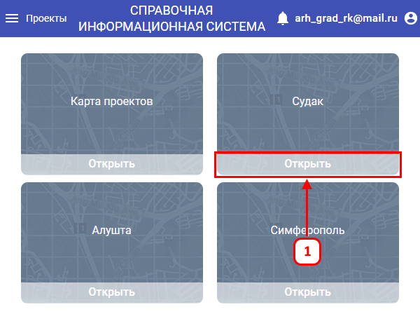

После авторизации в систему, Вам потребуется выбрать проект на странице «Проекты».
Проект – карта со слоями, на которых содержатся визуализированные объекты с атрибутивной информацией.
Для выбора проекта, требуется:

В случае, когда открыта другая страница системы, требуется выбрать «Проекты» в верхней панели (2) для перехода к карточкам проектов доступных для текущей учётной записи.